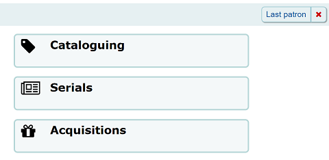
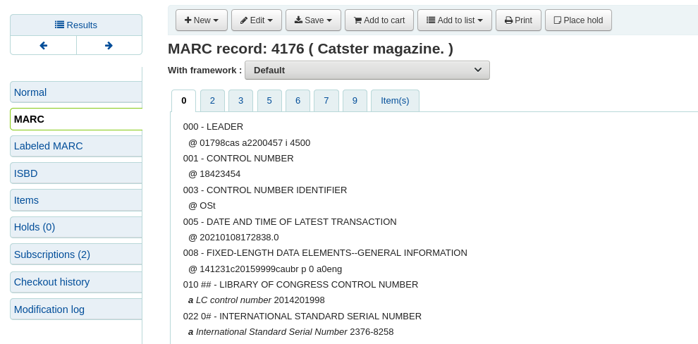

館員介面
到此： 其他 > 管理 > 整體系統偏好 > 館員介面
外觀
Display856uAsImage
詢問：將 856u 欄位的 URI 以圖片形式顯示於：___
預設值：既不在詳情頁面也不在結果頁面
值:
同在搜尋結果與書目詳情頁面
备注
Both XSLTDetailsDisplay and XSLTResultsDisplay need to have values in order for this option to work.
警告
此選項只適用於 MARC21。
詳情頁面
备注
XSLTDetailsDisplay needs to have a value in it for this option to work.
警告
只適用於MARC21 與 UNIMARC。
既不在詳情頁面也不在結果頁面
只限結果頁面
备注
XSLTResultsDisplay needs to have a value in it for this option to work.
警告
只適用於 MARC21。
說明：
除了這個選項被設定外，相應的XSLT選項必須被打開。
參見
此外，相應的 856q 欄位必須有一個有效的MIME圖像延伸名（例如，”jpg”）或MIME圖像類型（即以 “image/”開頭），或在該欄位中輸入通用指標 “img”。

备注
常見的圖像MIME類型
檔案類型
圖片 MIME 類型
檔案延伸
點陣圖
圖片/bmp
bmp
圖像互換格式 (gif)
圖片/gif
gif
JPEG 影像
影像/jpeg
jpg
JPEG 影像
影像/jpeg
jpeg
可縮放向量圖形
影像/svg+xml
svg
TIF 影像
影像/tiff
tiff
TIF 影像
影像/tiff
tif
當滿足所有要求時，將顯示圖像檔案而不是標準文字連結。點擊圖像將以與點擊文字連結打開它的方式相同。當您點擊圖像時，它應該在當前窗口中以全尺寸打開。
參見
DisplayIconsXSLT
詢問：___ 在館員介面 XSLT MARC21 結果與詳情頁面裡的格式、預期讀者及資料類型圖示和說明。
預設值：顯示
值:
不顯示
顯示
說明：
該偏好的啟用或停用基於書目記錄前導中編碼值的顯示圖示。
备注
這些圖示的資訊見 XSLT 資料類型圖示。
警告
This is only used in XSLT displays, so XSLTResultsDisplay and/or XSLTDetailsDisplay must be set to use an XSLT stylesheet for this to show (default or custom)
參見：
intranet_includes
詢問：使用模板資料夾裡的 ___ 資料夾內的檔案，不用/。(空白則不用)
預設值：包括
說明：
如果你想使用非標準的檔案，這個系統偏好可以讓你修改包含檔案的目錄。
IntranetCirculationHomeHTML
詢問：在流通模組首頁最下方顯示以下的 HTML
說明：
這個系統偏好可以讓你向 :ref:`流通主頁 <circulation-label>`新增內容。你可以新增連結、備忘錄或任何其他內容。

參見：
intranetcolorstylesheet
詢問：使用新增的 CSS 樣式表 ___ 取代預設樣式表的設定
說明：
該偏好用於為館員介面設定自定義CSS設置。
The value is a .css file. If you only need to add some directives, not necessarily a whole file, use IntranetUserCSS
以預設的樣式表(空白即停用)取代現有的設定。輸入檔案名稱，以及完整路徑或完整的 URL http://(若該檔案在外部的伺服器裡)。只輸入檔名，表示該檔案應在樣式表的資料夾裡，包括每個佈景、語言包都在 Koha 版面的資料夾裡。建議使用完整的路徑，即 HTTP 的網址。
空白則表示不使用。
备注
此處輸入的樣式表將用於**除了**預設館員介面CSS樣式表之外。
參見：
IntranetFavicon
詢問：在館員介面使用 ___ 做為喜愛的圖示。
备注
以網頁圖示產生器 :ref:`Favicon Generator <http://antifavicon.com/>`__ 將標識轉換為網頁圖示。
說明：
圖示是大多數瀏覽器中瀏覽器選項卡上頁面名稱旁邊顯示的小圖示。此欄位的預設值 (若空白) 是小小的 ‘K’ 當成 Koha 的標識。

參見：
IntranetmainUserblock
詢問： 在館員介面OPAC 的首頁顯示以下的 HTML 內容
說明：
此系統偏好允許您將內容新增到館員主介面頁面。您可以新增連結、備忘錄或任何其他內容。


參見：
IntranetNav
詢問：在館員介面的所有頁面的上端顯示以下 HTML 的內容(應是一串連結或空白)
說明：
這個系統偏好讓你在館員介面頁面的頂部新增連結。

參見：
IntranetReportsHomeHTML
詢問：在報表模組首頁最下方顯示以下的 HTML
說明：
這個系統偏好可以讓你在 :ref:`報表主頁 <reports-label>`中新增內容。你可以新增連結、備忘錄或任何其他內容。

參見：
IntranetSlipPrinterJS
詢問：使用以下的 JavaScript 列印收條。
說明：
在Koha 維基上了解更多關於這個偏好和附加組件設置的訊息，網址是http://wiki.koha-community.org/wiki/Setting_up_slip_printer_to_print_silently。
參見：
intranetstylesheet
詢問： 使用 CSS 樣式表 ___ 於館員介面的所有頁面，取代預設的樣式表 (空白則使用預設的樣式表)。
說明：
這個偏好允許圖書館定制館員介面的外觀。
該值是一個.css檔案。這個新檔案將覆蓋預設的樣式表。
以預設的樣式表(空白即停用)取代現有的設定。輸入檔案名稱，以及完整路徑或完整的 URL http://(若該檔案在外部的伺服器裡)。只輸入檔名，表示該檔案應在樣式表的資料夾裡，包括每個佈景、語言包都在 Koha 版面的資料夾裡。建議使用完整的路徑，即 HTTP 的網址。
空白則表示不使用。
警告
這裡輸入的樣式表將被用來**代替**預設的館員介面CSS樣式表。
If you’d rather use the default staff interface CSS, but add your own personal touch, see intranetcolorstylesheet.
參見：
IntranetUserCSS
要求：在館員介面的所有頁面上包括以下CSS
說明：
這個系統偏好讓你新增一些CSS指令來訂製館員介面的外觀。
The value is CSS code. If you have a .css file ready, use intranetcolorstylesheet or intranetstylesheet instead.
备注
在這裡輸入的CSS代碼將被用於預設的館員介面CSS樣式表**之外**。
參見：
IntranetUserJS
詢問： 在館員介面的各頁面包括以下的 JavaScript
說明：
這個偏好允許管理員輸入JavaScript或JQuery，它將被嵌入到館員介面的所有頁面中。
管理員可以使用這個偏好來訂製Koha的一些互動部分，例如，訂製登入提示的文字。
可以在 wiki 上找到 Koha 圖書館使用的樣本 JQuery 文字：http://wiki.koha-community.org/wiki/JQuery_Library。
參見：
SlipCSS
詢問：在借出與預約收條裡加入樣式表 ___。
說明：
可用此偏好在收條使用指定的字型或顏色。
應該是完整的 URL，以 http:// 起頭
參見：
staffClientBaseURL
詢問： 館員介面在 ___
說明：
警告
必須填入正確的資料供 CAS、svc 與 load_testing 使用。
參見：
StaffHighlightedWords
詢問：___ 在館員介面搜尋結果頁面中搜尋到的單詞。
預設值：強調
值:
不強調
重點
說明：
當設置為’突出顯示’時，搜尋館藏將在 :ref:`搜尋結果<search-results-label>`中以紅色和黃色突出顯示。館員可以在每次搜尋期間按兩下’取消突出顯示’以手動刪除突出顯示。
當設定為”不突出顯示”時，搜尋詞將不會突出顯示，並且館員將無法在每次搜尋期間手動打開突出顯示。
StaffLangSelectorMode
詢問： 在 ___ 顯示語文選擇器
預設值：只有頁尾
值:
頁首與頁尾
只限頁尾
頂端
說明：
如果你的館員介面有一種以上的語言，你可以選擇語言開關的位置
參見：
StaffLoginInstructions
詢問：在館員介面登入頁面上顯示以下HTML
說明：
在此欄位輸入的 HTML 將出現在館員介面登入表單的上方

參見：
模板
詢問：館員介面使用 ___ 模版。
預設值：prog
值:
prog
說明：
這個系統偏好用於選擇館員介面的主題。
目前只有一個與Koha配套的主題，即Prog。
XSLTDetailsDisplay
詢問：在館員介面的詳情頁面使用 ___ 做為XSLT樣式表
值:
輸入 “預設”來使用預設的樣式表
輸入一個XSLT文件的路徑
例如，/path/to/koha/and/your/stylesheet.xsl
在多語系環境下可在路徑裡輸入 {langcode} 告知 Koha 取用正確的資料夾
例如，/home/koha/src/koha-tmpl/intranet-tmpl/prog/{langcode}/xslt/intranetDetail.xsl
例如，http://mykohaopac.org/{langcode}/stylesheet.xsl
輸入一個外部樣式表的URL
預設: 預設
說明：
XSLT 樣式表允許客製化檢視書目記錄詳情。此偏好允許您使用 Koha 的預設值或設計自己的樣式表。
這個系統偏好控制了館員介面中詳細書目記錄的顯示。
If using a custom stylesheet that uses item MARC fields, enable the PassItemMarcToXSLT system preference. Otherwise, item fields are not available for use in XSLT stylesheets.
參見：
XSLTListsDisplay
詢問：在館員介面的結果頁面使用 ___ 做為 XSLT 樣式表
值:
輸入 “預設”來使用預設的樣式表
輸入一個XSLT文件的路徑
例如，/path/to/koha/and/your/stylesheet.xsl
在多語系環境下可在路徑裡輸入 {langcode} 告知 Koha 取用正確的資料夾
例如，/home/koha/src/koha-tmpl/intranet-tmpl/prog/{langcode}/xslt/intranetDetail.xsl
例如，http://mykohaopac.org/{langcode}/stylesheet.xsl
輸入一個外部樣式表的URL
預設: 預設
說明：
XSLT 樣式表允許客製化檢視書目記錄詳情。此偏好允許您使用 Koha 的預設值或設計自己的樣式表。
這個系統偏好控制館員介面中a :ref:`清單 <lists-label>`中記錄的顯示。
If using a custom stylesheet that uses item MARC fields, enable the PassItemMarcToXSLT system preference. Otherwise, item fields are not available for use in XSLT stylesheets.
參見：
XSLTResultsDisplay
詢問：在館員介面中使用 XSLT 樣式表在 ___ 處顯示結果
值:
輸入 “預設”來使用預設的樣式表
輸入一個XSLT文件的路徑
例如，/path/to/koha/and/your/stylesheet.xsl
在多語系環境下可在路徑裡輸入 {langcode} 告知 Koha 取用正確的資料夾
例如，/home/koha/src/koha-tmpl/intranet-tmpl/prog/{langcode}/xslt/intranetDetail.xsl
例如，http://mykohaopac.org/{langcode}/stylesheet.xsl
輸入一個外部樣式表的URL
預設: 預設
說明：
XSLT 樣式表允許客製化檢視搜尋結果的詳情。此偏好允許您使用 Koha 的預設值或設計自己的樣式表。
這個系統偏好控制館員介面中 :ref:`搜尋結果<search-results-label>`中記錄的顯示。
If using a custom stylesheet that uses item MARC fields, enable the PassItemMarcToXSLT system preference. Otherwise, item fields are not available for use in XSLT stylesheets.
參見：
認證
staffShibOnly
要求：___館員通過shibboleth以外的方式登錄。
預設值：允許
值:
允許
不允許
說明：
這個系統偏好允許你限制通過shibboleth登入到館員介面。
TwoFactorAuthentication
詢問：___ 雙因素身份驗證 （2FA）。
預設: 不啟用
值:
停用
啟用
Enforce
說明：
這個系統偏好可用於打開雙因素認證（2FA），以提高登錄館員介面時的安全性。
雙因素認證使用基於時間的一次性密碼（TOTP）作為第二因素。
一但這個系統偏好被啟用，館員必須 在他們的帳戶中啟用雙因素認證，使用第三方認證器應用。
在他們 :ref:`在他們的帳戶中啟用了雙因素認證<two-factor-authentication-staff-label>`後，館員每次需要登入到館員介面時，都需要生成一個基於時間的一次性密碼。
更多訊息請參見 :ref:`館員介面的雙因素認證<two-factor-authentication-staff-label>`部分。
If this system preference is set to ‘Enforce’, staff will no longer be able to log into the staff interface without setting up and using two-factor authentication.
選項
AudioAlerts
詢問：___ 定義在 管理的音頻警報部分 中的事件的音頻警報。
值:
停用
啟用
預設: 不啟用
說明 :
這個系統偏好能使 :ref:`聲音警報 <audio-alerts-label>`功能。
警告
此功能不支援所有的瀏覽器。必須是與 HTML5 相容的瀏覽器。
HidePatronName
詢問：在詳情頁面或 “預約” 畫面 ___ 借出該館藏的讀者姓名。
值:
不顯示
顯示
預設值：顯示
說明：
這個系統偏好允許您隱藏當前已借出館藏的讀者姓名。
參見：
IntranetAddMastheadLibraryPulldown
Asks: ___ a library select pulldown menu on the staff header search.
值:
不顯示
顯示
預設值：不顯示
說明：
When set to ‘Show’, there will a settings icon in the catalog search bar that, when clicked, will give the option of choosing a specific library.

This will search for records that have items whose home library is the selected library. It’s the same as the library limit on the advanced search page.
intranetbookbag
詢問：___ 館員介面中的購物車選項。
值:
不顯示
顯示
預設值：顯示
說明：
此系統偏好允許您在館員介面中啟用或禁用 購物車功能
參見：
IntranetCatalogSearchPulldown
詢問：___搜尋欄位下拉選單的 ‘搜尋目錄’ 框。
值:
不顯示

顯示

預設值：不顯示
說明：
這個系統偏好允許你為館員介面頁面頂端的 ‘搜尋目錄’ 選項卡中顯示索引下拉清單
showLastPatron
詢問：___ 館員介面中最後搜尋的讀者連結。
值:
不顯示
顯示
預設值：不顯示
說明
如果此偏好設定’顯示’，您最後查詢的讀者帳號會出現一個連結在Koha館員介面的右上角。當您登出時該鏈接將被清除。

StaffDetailItemSelection
詢問：___ 在紀錄詳情頁面裡的館藏選項。
值:
停用
啟用
預設值：啟用
說明：
此偏好讓您在館員介面的每個館藏紀錄的左方出現 (或不出現) 預約用的勾選框。允許館員勾選後立即編輯或刪除多筆館藏。

UseWYSIWYGinSystemPreferences
詢問：編輯部份 HTML 系統偏好時 ___ WYSIWYG 編輯器。
值:
不顯示
顯示

預設值：不顯示
說明：
此偏好允許您使用 WYSIWYG 編輯器以 HTML 格式變更系統偏好。
viewISBD
要求：___ 館員在館員介面上以 ISBD 形式查看記錄。
值:
允許
不允許
預設值：允許
說明：
該系統偏好在詳細記錄檢視中顯示或隱藏ISBD欄標。

參見：
viewLabeledMARC
要求：___ 館員在館員介面上以標記的 MARC 形式查看記錄。
值:
允許
不允許
預設值：允許
說明：
這個系統偏好在詳細記錄檢視中顯示或隱藏標記的MARC標籤
參見：
viewMARC
要求：___ 館員在館員介面上以純 MARC 形式查看記錄。
值:
允許
不允許
預設值：允許
說明：
該系統偏好在詳細記錄檢視中顯示或隱藏MARC欄標。

參見：